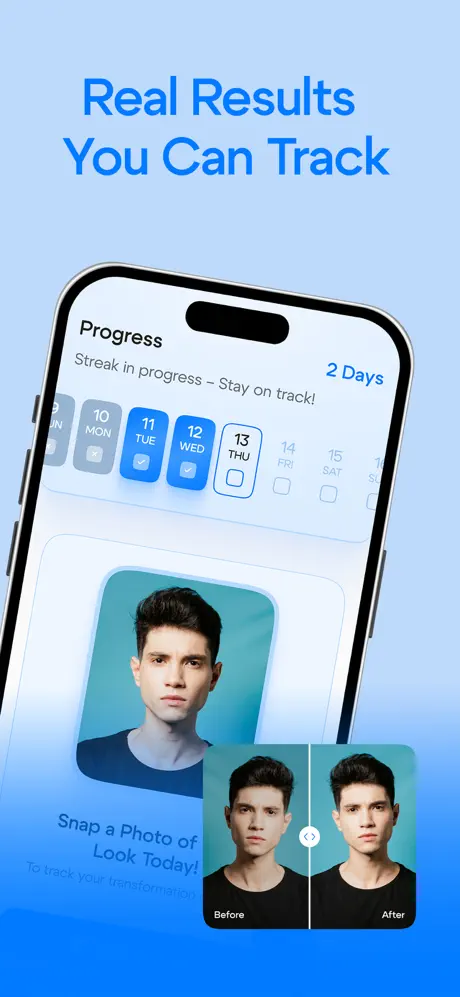
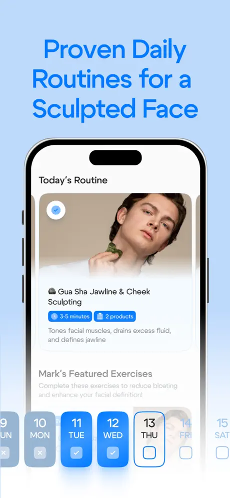
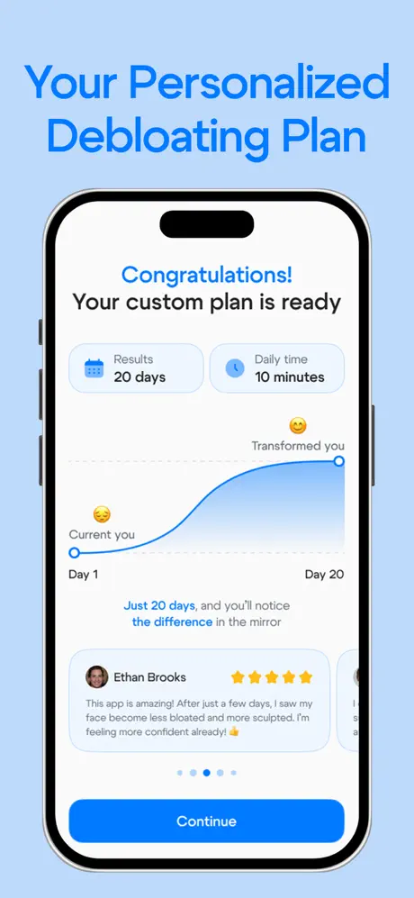
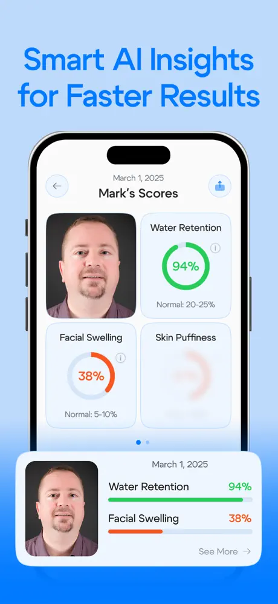
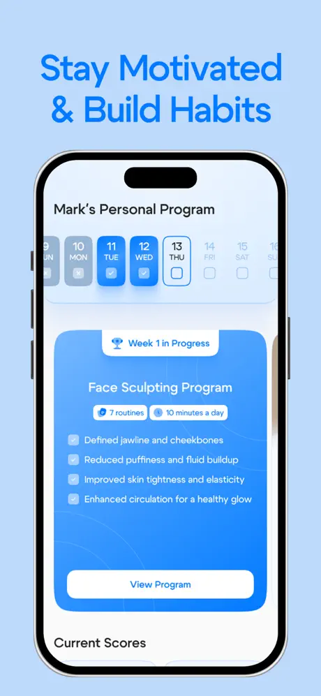
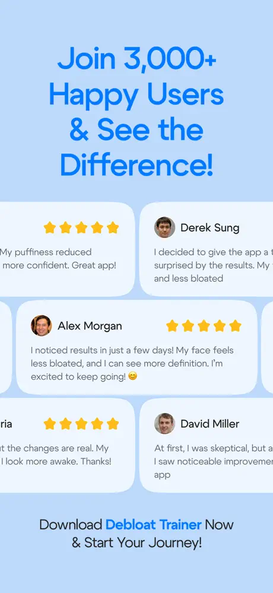

05 / Мобильный дизайн
Bloat Down.
Легче,
каждый день.
Мобильный продукт для трекинга вздутия, пищевых триггеров и маленьких ежедневных ритуалов — без ощущения медицинской сложности.
UX / UIHealth appМобильный продуктТрекинг привычек







Триггеры без давления.
Еда, симптомы и ощущения фиксируются быстро, чтобы приложение показывало паттерны, не превращая каждый прием пищи в обязанность.
Яркий язык здоровья.
Розовая айдентика из иконки делает опыт теплым и прямым: поддерживающим, понятным и не слишком клиническим.
Маленькие рутины, видимый прогресс.
Ежедневные ритуалы поданы как маленькие победы, помогая понять, на какие изменения тело отвечает со временем.
Для быстрых отметок.
Поток экранов держит основные действия рядом и читаемыми, чтобы продуктом было удобно пользоваться именно в моменты, когда появляются симптомы.